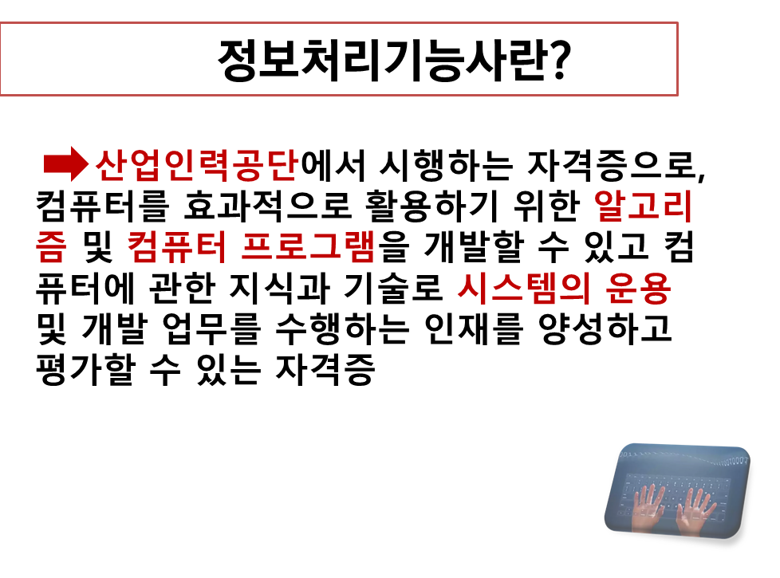

------------보기------------
오징 원시 기계 어셈 고급 c언
----------------------------
Q.컴퓨터활용능력과 정보처리기능사의 내용 중에서, 일반적으로 컴퓨터는 사람이 알아들을 수 있을만한 문법체계로인해 작성된 고급 언어를 0과 1로만 이루어진 이진법인 'ㅇㅇ어'로 변환시켜서 명령을 해석한다. 이 때 'ㅇㅇ'에 들어갈 알맞은 단어를 위 보기 중 골라 밑에 텍스트창에 입력하시오.
컴퓨터 활용능력 자격평가 기관: 대한상공회의소오징 원시 기계 어셈 고급 c언
----------------------------
Q.컴퓨터활용능력과 정보처리기능사의 내용 중에서, 일반적으로 컴퓨터는 사람이 알아들을 수 있을만한 문법체계로인해 작성된 고급 언어를 0과 1로만 이루어진 이진법인 'ㅇㅇ어'로 변환시켜서 명령을 해석한다. 이 때 'ㅇㅇ'에 들어갈 알맞은 단어를 위 보기 중 골라 밑에 텍스트창에 입력하시오.
정보처리기능사 자격평가 기관: 큐넷, 한국산업인력공단